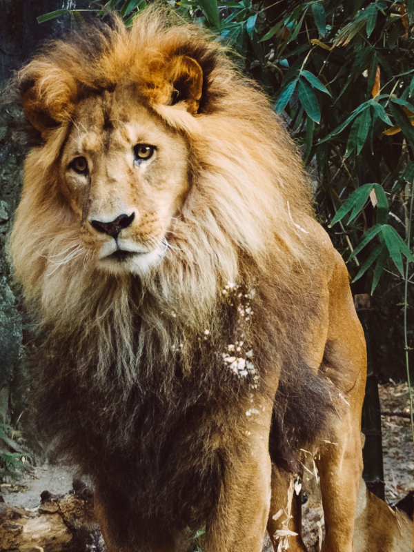

Animais Fantásticos
-

-

-

-

-

-

Raposa
A raposa é um mamífero ágil e inteligente da família dos canídeos, conhecido por seu focinho fino e cauda longa e peluda.
Adapta-se facilmente a diferentes ambientes e possui hábitos majoritariamente noturnos.
É um animal oportunista, capaz de viver tanto em florestas quanto em áreas urbanas.
Sua audição apurada ajuda a localizar presas mesmo sob a neve ou vegetação densa.
Comunica-se por sons, expressões corporais e marcação de território.
Desempenha um papel importante no controle de populações de pequenos animais.
Esquilo
O esquilo é um pequeno mamífero roedor, famoso por sua cauda volumosa e agilidade ao subir em árvores.
Alimenta-se principalmente de sementes, frutas e nozes, sendo comum em florestas e parques.
Costuma armazenar alimento para os períodos em que há escassez.
Seu comportamento ativo contribui para a dispersão de sementes na natureza.
Possui excelente memória espacial para encontrar seus esconderijos.
É mais ativo durante o dia, passando grande parte do tempo em movimento.
Urso
O urso é um grande mamífero de corpo robusto, conhecido por sua força e comportamento geralmente solitário.
Possui alimentação variada, podendo consumir frutos, peixes, insetos e pequenos animais.
Durante o inverno, algumas espécies entram em um estado de hibernação parcial.
Apesar do tamanho, são bons nadadores e conseguem correr por curtas distâncias.
Utilizam olfato extremamente apurado para localizar alimento a longas distâncias.
Algumas espécies demonstram comportamento protetor intenso com seus filhotes.
Lobo
O lobo é um mamífero carnívoro que vive em grupos organizados chamados de matilhas.
É conhecido por sua inteligência, comunicação por uivos e forte instinto de cooperação.
A caça em grupo aumenta suas chances de capturar presas maiores.
Desempenha um papel importante no equilíbrio dos ecossistemas.
Possui hierarquia social bem definida dentro do grupo.
É altamente resistente a climas frios e ambientes extremos.
Macaco
O macaco é um primata sociável e curioso, com grande habilidade para escalar árvores.
Alimenta-se principalmente de frutas, folhas e insetos, sendo comum em florestas tropicais.
Vive em grupos e possui comunicação baseada em sons, gestos e expressões faciais.
Sua inteligência permite o uso de objetos como ferramentas em algumas espécies.
Passa grande parte do tempo interagindo socialmente com outros membros do grupo.
Apresenta comportamentos de cuidado coletivo com os filhotes.
Leão
O leão é um grande felino conhecido como o “rei da selva”, símbolo de força e liderança.
Vive em grupos chamados de alcateias e é um dos principais predadores da savana africana.
As fêmeas são responsáveis pela maior parte da caça.
Seu rugido pode ser ouvido a vários quilômetros de distância.
Os machos se destacam pela juba, que indica maturidade e força.
Descansam grande parte do dia para conservar energia para a caça noturna.
FAQ
- Qual a idade dos animais?
- As raposas são animais mamíferos e onívoros pertencentes à família Canidae. São vulpídeos de porte médio, caracterizados por um focinho comprido e uma cauda longa e peluda.
- Eles são fantásticos?
- Também apresentam como particularidade suas pupilas ovais, semelhantes às pupilas verticais dos felídeos.
- Qual a diferença?
- As raposas são animais mamíferos e onívoros pertencentes à família Canidae. São vulpídeos de porte médio, caracterizados por um focinho comprido e uma cauda longa e peluda.
- Como proteger?
- Também apresentam como particularidade suas pupilas ovais, semelhantes às pupilas verticais dos felídeos.
Números
Contato

- contato@origamid.com
- +55 (21) 9999-9999
- Rua do Conde, nº 21
- Rio de Janeiro - RJ
- Doe 0 bitcoin para nos ajudar
- Seg à Sex das 8 às 18